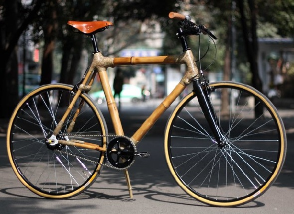

Всё о велосипедах
Материал рамы велосипеда
Основными материалами при производстве рам велосипедов на сегодняшний день являются: сталь, сплавы алюминия, карбон. Есть и другие, например, титан, сплавы магния, бамбуковые стволы (да-да и такие есть), но мы их рассматривать не будем вследствие их малой распространенности.
Рама велосипеда из бамбука
Далее в виде таблицы сделаем небольшое сравнение различных рам для велосипеда.
| Вес | Устойчивость к повреждениям | Ремонтопригодность | Цена | |
|---|---|---|---|---|
| Стальная рама | тяжелая | прочная, подвержена коррозии | легко заварить в любом гараже | дешевая |
| Сплавы алюминия | легкая | менее прочная, чем стальная, не боится коррозии | заварить реально, но проблематично | средняя |
| Рамы из карбона | очень легкая | прочная, очень боится ударов об острые предметыи попадания влаги внутрь рамы | сломалась — выкинь | дорогая |
Как можно заметить, золотой серединой здесь является алюминиевая рама, но если у вас есть лишние деньги, то смело выбирайте карбоновую.